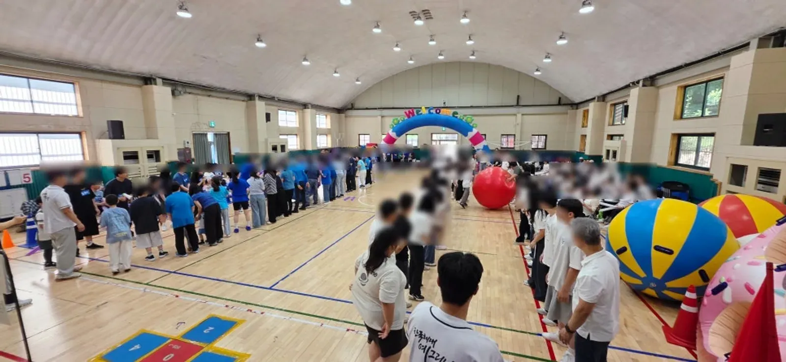

남양주 운동회 업체는 늦어도 6개월 전에 고르기 시작해야 원하는 날짜를 잡을 수 있습니다. 봄 운동회라면 지금이 비교를 시작할 때입니다. 업체를 고를 때는 가격표보다 「우리 원의 연령 · 인원 · 공간 · 날씨에 맞춰 프로그램을 바꿔 주는가」를 먼저 보세요. 아래 여섯 가지 질문을 상담에서 그대로 물어보면 업체마다 차이가 드러납니다.

- 운동회 · 체육대회는 최소 6개월 전부터 업체 일정을 묻는 것이 안전합니다.
- 프로그램이 연령별로 나뉘는지, 부모님 · 조부모님 게임이 있는지 확인합니다.
- 비가 오면 어떻게 바꾸는지, 실내 체육관 진행이 가능한지 미리 물어봅니다.
- 에어바운스 · 환영 아치 · 천막 · 의자 같은 물품을 한 업체에서 같이 준비하는지 보면 당일 연락이 줄어듭니다.
- 한국체대 예그리나는 남양주시 별내면 청학리에 사무실이 있고, 방문 상담은 미리 전화로 약속하면 됩니다.
1. 남양주 운동회 업체, 언제부터 알아볼까
운동회는 봄과 가을에 날짜가 몰립니다. 특히 주말이나 행사가 몰리는 주는 일찍 마감되기 쉽습니다. 예그리나는 운동회 · 체육대회 문의를 최소 6개월 전부터 받으라고 안내합니다. 운동장이나 체육관 대관, 학부모 공지 일정까지 생각하면 업체를 먼저 정해 두는 편이 편합니다.
| 행사 | 문의 시기 | 이유 |
|---|---|---|
| 어린이집 · 유치원 · 초등학교 운동회 | 6개월 전부터 | 좋은 날짜와 진행 선생님은 먼저 정해집니다 |
| 교회 전교인 체육대회 | 6개월 전부터 | 체육관 대관과 함께 움직여야 합니다 |
| 놀이기구 · 물놀이 렌탈 | 한 달 전부터 | 기구 수량이 정해져 있어 날짜별로 예약합니다 |
| 유아체육 수업 | 신학기 전 1월 | 1월에 상담하고 3월에 시작합니다 |
2. 상담에서 물어볼 여섯 가지
- 연령별 프로그램이 따로 있나요? — 영아 · 유아 · 초등은 할 수 있는 게임이 다릅니다. 같은 게임을 모든 연령에 돌리면 어린 반이 소외됩니다.
- 부모님 · 조부모님 게임이 있나요? — 가족이 함께 오는 운동회라면 어른이 움직이는 순서가 있어야 끝까지 자리를 지킵니다.
- 비가 오면 어떻게 하나요? — 실내 체육관으로 옮길 수 있는지, 언제까지 결정해야 하는지 물어봅니다.
- 물품은 어디까지 같이 준비하나요? — 에어바운스 · 환영 아치 · 천막 · 의자 · 게임도구 · 만국기를 한 곳에서 준비하면 당일 연락 창구가 하나가 됩니다.
- 당일 몇 시에 도착하나요? — 장비 자리를 잡고 세팅할 시간이 충분한지 확인합니다.
- 해마다 같은 프로그램인가요? — 같은 업체를 다시 부를 생각이라면 게임이 바뀌는지가 중요합니다.
예그리나의 답을 미리 적으면 이렇습니다. 프로그램은 1부 공식행사, 2부 단체화합 · 대표자 게임, 마지막 시상식 · 폐회식으로 짜고, 전체 게임 · 연령별 게임 · 부모님 · 조부모님 게임을 섞습니다. 행사 당일에는 일찍 도착해 장비 자리를 잡고 세팅하며, 호응이 좋았던 기본 틀은 그대로 두고 게임만 해마다 바꿉니다.

3. 업체를 비교할 때 쓰는 표
두세 곳과 상담했다면 아래 표에 답을 적어 비교해 보세요. 가격은 인원 · 장소 · 프로그램에 따라 달라지므로 같은 조건으로 물어야 비교가 됩니다.
| 비교할 점 | 확인 방법 |
|---|---|
| 프로그램 구성 | 연령별 · 가족 게임이 몇 개인지, 순서표를 받아 봅니다 |
| 우천 대비 | 실내 전환 기준과 결정 시점을 물어봅니다 |
| 물품 범위 | 놀이기구 · 아치 · 천막 · 의자 중 무엇이 포함인지 적습니다 |
| 진행 인원 | 사회자와 진행 선생님이 몇 명 오는지 확인합니다 |
| 현장 기록 | 실제 현장 사진과 행사 기록을 볼 수 있는지 확인합니다 |
예그리나의 현장 사진은 현장사진에, 행사별 준비 기록은 행사 이야기에 있습니다. 교회 전교인 체육대회, 초등학교 운동회, 어린이집 · 유치원 체육대회, 여름성경학교 물놀이 기록을 볼 수 있습니다.
4. 남양주에서 행사를 준비할 때
남양주(경기도 남양주시)는 생활권이 여러 곳으로 나뉘어 있습니다(별내 · 다산 · 진접 · 오남 · 퇴계원 · 화도 · 평내호평 · 와부 등). 장소가 정해지면 정확한 주소와 차량 진입로, 장비를 내릴 자리를 업체에 알려 주세요. 놀이기구와 천막은 차로 실어 오기 때문에 운동장이나 체육관 입구까지 차가 닿는지가 세팅 시간을 좌우합니다.
예그리나 사무실은 남양주시 별내면 청학리에 있습니다. 직접 만나 상담하고 싶다면 미리 전화로 약속해 주세요. 남양주 밖 지역은 운영 지역에서 사무실 기준 이동 시간을 볼 수 있습니다.

5. 운동회 업체에 견적 문의할 때 보낼 내용
자동 견적서에서 항목을 고르면 그 목록으로 상담이 시작됩니다. 자동 견적서는 금액을 보여 주지 않으며, 비용은 상담 후 안내합니다.
| 항목 | 함께 보낼 내용 |
|---|---|
| 어린이집 · 유치원 운동회 | 원아 수 · 가족 참가 여부 · 실내/야외 |
| 초등학교 운동회 | 학년 수 · 전교생 수 · 운동장 또는 체육관 |
| 에어바운스 | 놓을 자리 크기 · 전기 쓸 곳 |
| 천막 · 의자 | 그늘이 필요한 자리 · 앉을 인원 |
| 운동회 게임도구 · 만국기 | 원하는 게임이 있으면 이름 |
6. 함께 읽으면 좋은 글
연말 발표회를 앞두고 있다면 남양주 발표회 사회자 — 재롱잔치 전에 원에서 정할 7가지를 먼저 보세요. 남양주 행사 안내는 남양주 페이지에 있습니다.
자주 묻는 질문
운동회 업체는 몇 곳 정도 비교하면 좋을까요?
두세 곳이면 충분합니다. 같은 날짜 · 인원 · 장소 조건으로 물어야 프로그램과 물품 범위를 제대로 비교할 수 있습니다.
6개월 전이면 너무 이르지 않나요?
운동회 날짜가 몰리는 시기에는 좋은 날짜와 진행 선생님이 먼저 정해집니다. 날짜만 먼저 잡아 두고 프로그램은 가까워졌을 때 다듬어도 됩니다.
비용은 언제 알 수 있나요?
인원 · 장소 · 프로그램 구성에 따라 달라 상담 후 안내합니다. 자동 견적서로 항목을 골라 보내 주시면 상담이 빨라집니다.